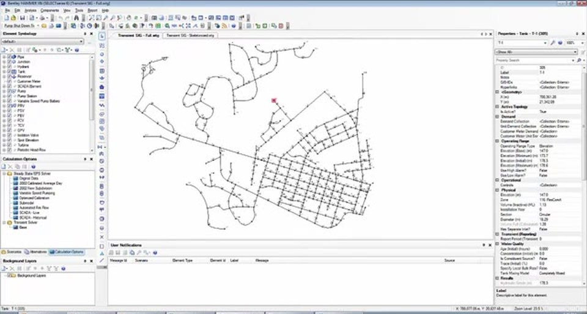
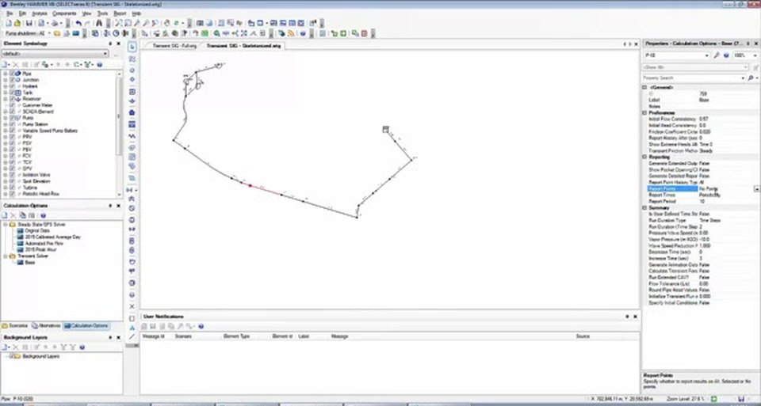
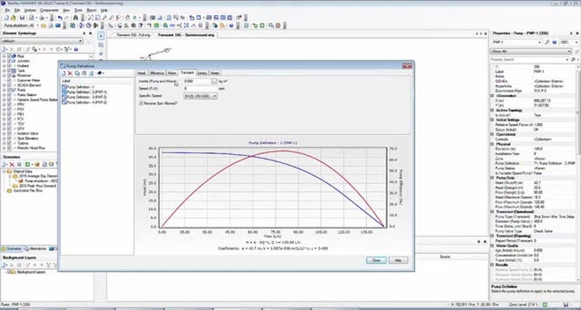
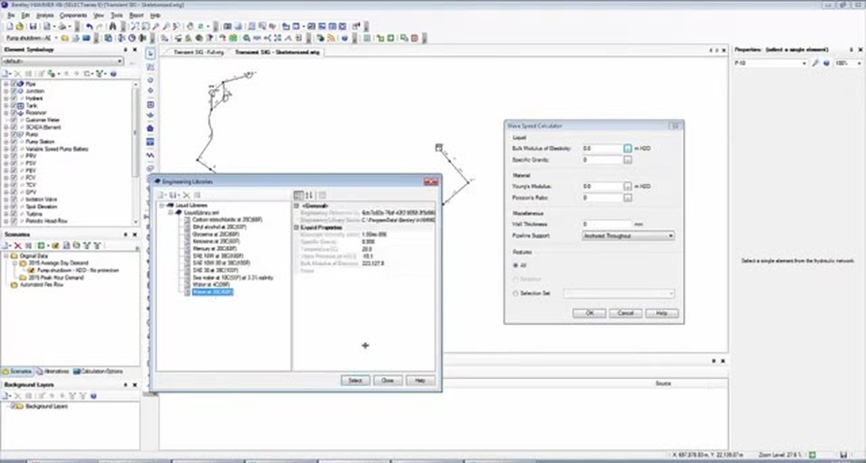
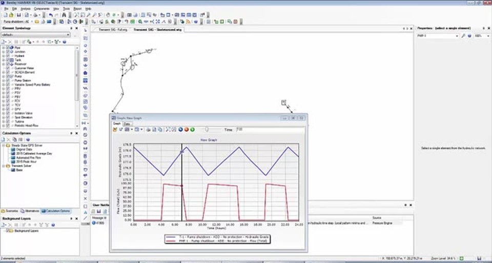
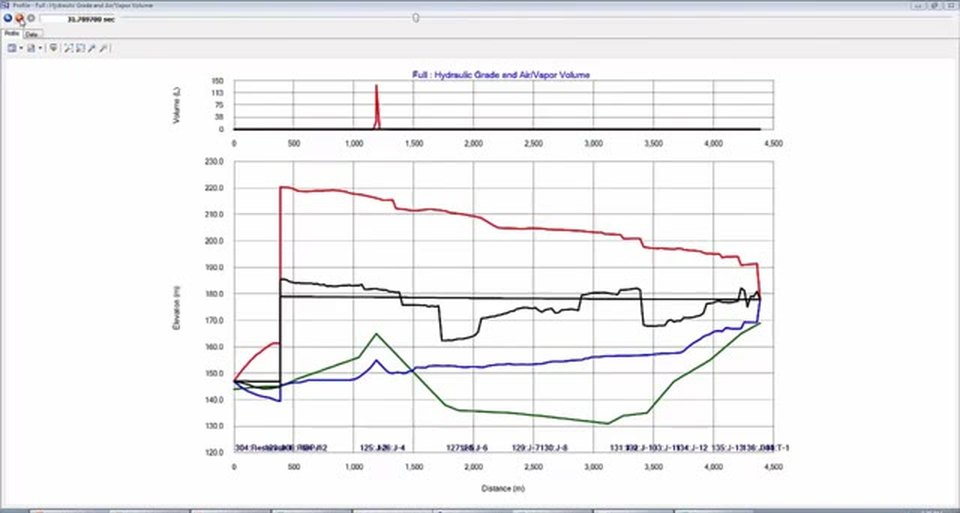
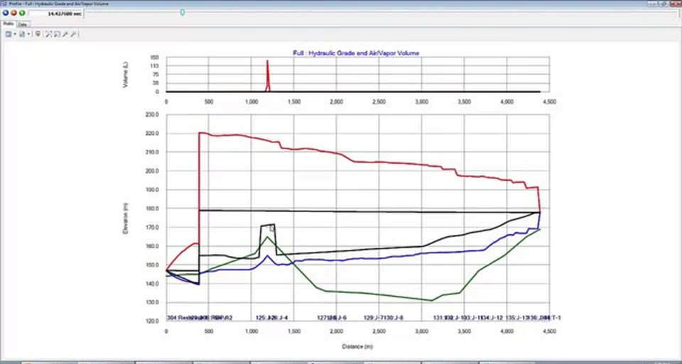

Introduction
Most engineers can build a steady-state water model. Far fewer are comfortable taking that same model and asking the harder question: what happens in the seconds after a pump trips? A steady-state or EPS run only shows you the system "before" and "after" — it never reveals the violent pressure waves that travel through the pipeline in between. That gap is exactly what Bentley HAMMER exists to fill.
This article walks through the complete workflow for computing your first transient simulation, using a classic emergency pump shutdown scenario on a transmission main. We start with an existing water model and prepare it, step by step, for transient analysis — covering every input that actually matters and explaining why it matters, not just where to click.
Start With a Hydraulically Equivalent Model
Before touching any transient settings, decide which version of the model you will analyze. A full distribution model carries hundreds of junctions, demands, and looped mains — most of which contribute almost nothing to the transient response of the main line.

If you own Bentley WaterGEMS, the Skelebrator tool can collapse that full model into a hydraulically equivalent skeleton in minutes. It lumps demands onto the remaining nodes and combines pipes in series and parallel so that flows and hydraulic grades stay identical to the full model. The result is a clean transmission line from pump station to tank — the part that actually experiences the worst surges.

Step 1 — Configure the Pump Shutdown
Pump element · Transient sectionThe scenario is simple: the pump is running, then loses power. In the pump's properties, open the Transient section and set the pump type to "Shut Down After Time Delay." For this example we use a 400 mm discharge diameter and a time delay of 5 seconds.
That delay means the simulation runs steady for five seconds, then cuts power to the pump. The pump does not stop instantly — it spins down on its own momentum, and that gradual loss of head is what generates the transient. To simulate the spin-down accurately, the program needs to know how the pump behaves mechanically, which brings us to the pump definition.
Step 2 — Enter the Pump's Transient Properties
Pump definition · Transient tabOpen the pump definition and switch to its Transient tab. Three inputs control the spin-down physics:
- Inertia — the rotational inertia of the pump/motor assembly. HAMMER provides a built-in calculator: enter the brake horsepower and rotational speed and it estimates inertia for you.
- Speed — the rated rotational speed.
- Specific Speed — a more advanced parameter tied to the shape of the pump's performance curve. It lets HAMMER predict how the pump behaves not just in the normal (positive head, positive flow) quadrant, but in all four quadrants — including reverse flow and reverse spin after the trip.

The HAMMER help file includes an equation to help you estimate which specific-speed curve set to choose. For a first pass, the default is acceptable — but on a real project, getting the four-quadrant behavior right is what separates a credible surge study from a guess.
Step 3 — Assign a Wave Speed to Every Pipe
Tools · Wave Speed CalculatorWave speed (celerity, a) is the single most influential transient parameter. It controls how fast pressure waves travel and how they reflect and interact — so every pipe needs an accurate value. Wave speed depends on the pipe material, wall thickness, and how the pipe is restrained at its ends.
Rather than computing it by hand, use the Wave Speed Calculator under the Tools menu. Pick your liquid from the engineering library (here, water at 20 °C), then select the pipe material — the library already stores the Young's modulus and Poisson's ratio for materials like ductile iron. Add the wall thickness and restraint condition, then apply the result to all pipes at once.

Step 4 — Set the Transient Calculation Options
Analysis · Calculation OptionsHAMMER keeps a separate calculation-option set for transient-specific settings, distinct from the steady-state/EPS solver options. A few entries you will almost always configure:
- Points to report — by default HAMMER saves no element results, only profiles. Change this to Selected Points and pick your points of interest from the drawing: the pump, the high point, and the tank. These are where you will later graph pressure and flow.
- Report period — how often results are saved for graphs (e.g. every 10 time steps). The default is usually fine.
- Run duration — switch from "time steps" to time and enter a duration in seconds. We use 90 seconds — long enough to capture the event and let the system settle so you can confirm the transient has decayed.
- Generate animation data — set this to True. It is off by default, but it is what lets you replay the surge visually afterward. Always enable it.
HAMMER calculates the hydraulic time step automatically, balancing accuracy against run time. You can override it with a custom value under Analysis → Transient Time Step Options, but the auto value is a sensible default for a first run.
Step 5 — Choose the Right EPS Starting Point
Initial conditionsIf your initial conditions come from an Extended Period Simulation, you must tell HAMMER which moment in time to freeze as the steady starting state. This matters enormously: starting the transient when the pump is off would simulate nothing.

Graphing the pump alongside the tank shows the familiar fill-and-drain cycle. We pick a time when the pump is on — here, hour 7 — and set that as the transient initialization time. The transient run then captures exactly what happens between this instant and the moment the pump trips five seconds later.
Step 6 — Define Profiles for the Animation
View · ProfilesProfiles define the longitudinal slices HAMMER animates. Under View → Profiles, click New → Select from Drawing, then click the upstream point (the reservoir) and the downstream point (the tank). HAMMER draws the profile automatically.
On this skeleton, one profile from reservoir to tank covers the whole system — name it "Full." On a longer or more interconnected model, add a few focused profiles (e.g. a "Pump Detail" view of the first few hundred metres) so fine detail isn't lost when you zoom out to the full length.
Step 7 — Compute, Validate, Run
AnalysisThe run sequence is three clicks:
- Compute Initial Conditions — establishes the steady starting state.
- Validate — checks for input errors before the heavy computation. Resolve real warnings; ignore benign ones.
- Compute — runs the transient simulation and returns a summary of maximum and minimum pressures.
The summary table tells you the extremes, but numbers alone don't reveal what is physically happening. For that, you open the Transient Results Viewer.
Reading the Results: The Transient Envelope
Open the Transient Results Viewer (its toolbar icon, or Analysis → Transient Results Viewer). The first tab shows profiles; the other two show graphs at your selected points.

Choose the Hydraulic Grade and Air/Vapor Volume view and open the profile. The envelope is the heart of a surge study:
- The red line is the maximum hydraulic grade reached anywhere along the pipe during the run.
- The blue line is the minimum hydraulic grade.
- The green line is ground elevation; the black line is the initial steady grade.
- The top panel reports vapor volume — and that spike is the warning sign.
Animate the run. Five seconds in, the pump trips and a negative wave races downstream. At the high point the pressure drops below atmospheric, then below the vapor pressure of water — and a vapor pocket forms. It grows, then begins to collapse as the reflected wave returns positive pressure.
The Column-Separation Slam
What happens when that vapor pocket finally collapses is the most dangerous event in the whole simulation. The two water columns on either side of the cavity rush back together and slam — an effect hydraulically identical to instantaneous valve closure. Water is nearly incompressible, so the sudden change in momentum produces a severe pressure spike, like a head-on collision.

This single phenomenon is what produces most of the maximum pressures in the model. As the spike rebounds, it reflects as a low-pressure wave that pulls pressures down again elsewhere. A system that behaves like this — vapor pockets forming and slamming shut — clearly needs transient protection: a surge vessel, air valves, a controlled-closure strategy, or some combination. The simulation we just ran is the "no protection" baseline against which those measures are tested.
Why Skeletonize? The Diminishing Returns of the Full Model
Now the payoff for starting with the skeleton. Running the full model would have multiplied the configuration work and introduced complications that have nothing to do with the answer you actually need:
- Multiple wave speeds. A full model mixing ductile iron, PVC, and steel needs wave speeds entered per material group, carefully, to be accurate.
- Zero-flow pipes. Closed or zero-flow pipes force HAMMER to convert head loss to a friction factor in ways that can demand extra data massaging during the transient.
- Active PRVs. Pressure-reducing valves need transient coefficients describing whether and how fast they modulate during the event.
And the engineering reality is that the worst transients occur on the main line between the pump station and the tank — exactly what the skeleton preserves. Out in the looped, far reaches of the network, waves dampen out through friction and reflection. If you can mitigate harmful surges in the hydraulically equivalent skeleton, the rest of the system you left out will almost certainly be fine.
Key Takeaways
- Run transients on a hydraulically equivalent skeleton — same answer, far less setup.
- The pump's inertia and specific speed drive the spin-down; the four-quadrant curve makes reverse flow credible.
- Wave speed on every pipe is non-negotiable — use the calculator and the material library.
- Always enable Generate Animation Data, select your key points, and run long enough for the system to settle.
- Initialize the transient at a sensible EPS time step (pump on).
- Read the transient envelope: vapor pockets and the column-separation slam are the events that justify surge protection.
References
- Bentley Systems. Bentley HAMMER CONNECT Edition Help — Computing a Transient Simulation; Wave Speed Calculator; Transient Calculation Options.
- Walski, T. et al. (2007). Advanced Water Distribution Modeling and Management. Bentley Institute Press.
- Wylie, E.B. & Streeter, V.L. Fluid Transients in Systems. Prentice Hall.
- Bentley Communities — WaterGEMS Skelebrator and HAMMER transient modeling discussions.